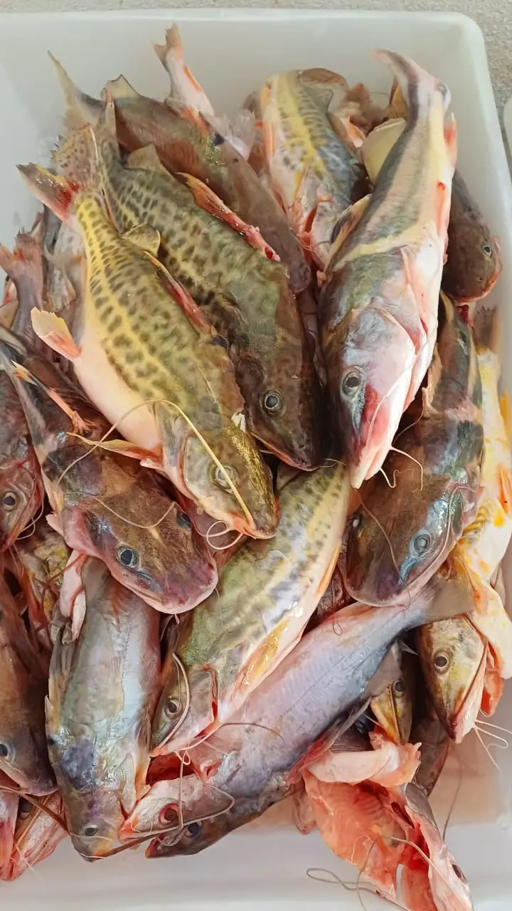

Bagre
Pimelodus maculatus
Produto vendido exclusivamente inteiro.
Consultar Preço e EncomendarRetire na loja: R. Bom Jardim, 379 — Centro, Cáceres.
Bagre: O Peixe de Couro que os Ribeirinhos do Rio Paraguai Nunca Deixaram de Pescar
O Bagre (Pimelodus maculatus) é um dos peixes de couro mais tradicionais e respeitados da bacia do Rio Paraguai. De porte compacto — pesando geralmente entre 400g e 2 quilos —, ele habita tanto os trechos de correnteza quanto as lagoas marginais e os remansos que se formam durante a cheia do Pantanal mato-grossense. Reconhecível pela pele lisa sem escamas, pelo corpo alongado e pelos longos bigodes característicos da família dos siluriformes, o Bagre é capturado há séculos pelos ribeirinhos e pescadores artesanais que abastecem os mercados locais de Cáceres-MT. Sua fama não vem da nobreza — vem da versatilidade e do sabor inconfundível que só a carne de peixe selvagem oferece.
O Segredo do Caldo: A Carne que Absorve o Tempero por Completo
A característica mais valorizada do Bagre na cozinha regional é sua capacidade extraordinária de absorver os temperos durante o cozimento. Enquanto peixes de sabor mais delicado tendem a "competir" com os aromas do refogado, o Bagre os incorpora completamente, criando uma fusão em que carne e tempero se tornam inseparáveis. Em um caldo apurado com tomate, pimentão, cebola, coentro fresco e pimenta-de-cheiro — o repertório clássico da culinária pantaneira de Cáceres —, a carne do Bagre absorve toda a complexidade do refogado e devolve ao caldo um sabor encorpado e dourado naturalmente, sem espessante artificial.
Formas de Preparo: Do Caldo à Frigideira
A versatilidade do Bagre vai muito além do caldo — embora seja nele que brilhe com mais intensidade:
- Caldo Pantaneiro: O clássico incontestável. Bagre inteiro em caldo temperado com tomate, cebola, pimentão, coentro e pimenta-de-cheiro. Servido fumegante com arroz branco e farinha de mandioca.
- Bagre Frito Inteiro: Temperado com sal grosso, alho e limão, frito por imersão em óleo bem quente. A pele fica crocante e dourada enquanto o interior permanece macio e suculento — petisco obrigatório nas feiras de Cáceres.
- Ensopado de Panela de Pressão: As postas se soltam naturalmente do espinho central após o cozimento sob pressão, facilitando o consumo para toda a família.
- Moqueca Simples: Bagre em postas cozido com leite de coco, tomate, cebola, coentro e azeite — versão mais elaborada que evidencia o sabor característico da carne.
Pesca Responsável e Disponibilidade
Na Peixaria Rio Paraguai, o Bagre é comercializado exclusivamente inteiro e fresco, capturado por pescadores parceiros diretamente nas águas do Rio Paraguai. Por ser um peixe nativo, está sujeito à sazonalidade natural e ao período da piracema. Recomendamos consultar a disponibilidade pelo WhatsApp antes de vir até a loja em Cáceres — trabalhamos sempre dentro das normas de pesca regulamentada de Mato Grosso, garantindo um produto de procedência responsável e sabor autêntico do Pantanal.